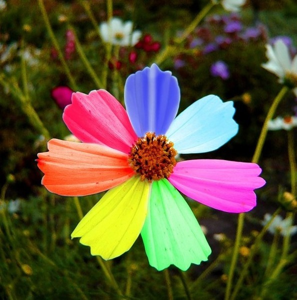
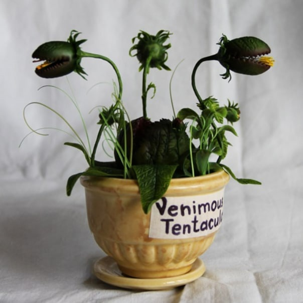
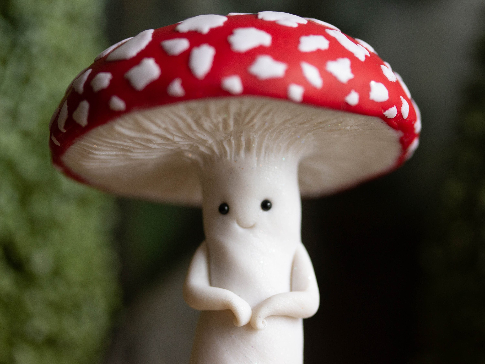

|  | Цветик-семицветикВолшебной красоты цветок. Но он славится не только своей красотой, но и возможностью исполнить 7 заветных желаний.Стоит лишь оторвать лепесток и сказать волшебные слова. |
Корень мандрагорыЭто растения с живыми корнями, которые имеют вид маленького человечка. Они кричат так, что могут оглушить и довести человека до потери сознания на некоторое время.Так что стоит быть очень осторожным. |
|
|  | Жгучая антенницаМагическое растение, которое обладает ядовитым укусом, а также способно задушить жертву своими щупальцами. Но те, что есь у нас очень даже добрые, если им ничего не угрожает. |
Чёрный лотосРовно в полночь распускает свои лепестки чёрный лотос - очень редкий и удивительно красивый цветок. Ему не нужно ни влаги, ни солнца, ни ухода, он привык к свободе дикой природы. Его сильные широкие лепестки в тусклом лунном свете играют красками от багрово-черных оттенков до иссиня-серых. Одуряющий сладкий запах, исходящий от цветка, несёт человеку безумие и смерть. |
|
 |
Тюльпан с феейЭтот тюльпан станет прекрасным украшением вашего дома,а маленькая фея внутри принесёт уют в дом и будет помогать вам по хозяйству.Но нужно будет немного подождать,пока фея вам доверится и осмелится показаться. |
|  | Радостный грибЕсли у вас есть хобби и вы боитесь показать результат другим людям, то Радостный гриб с радостью посмотрит на ваш результат и точно не осудит. Он так же будет незаменим ,если вы социафоб,но вам одиноко. |